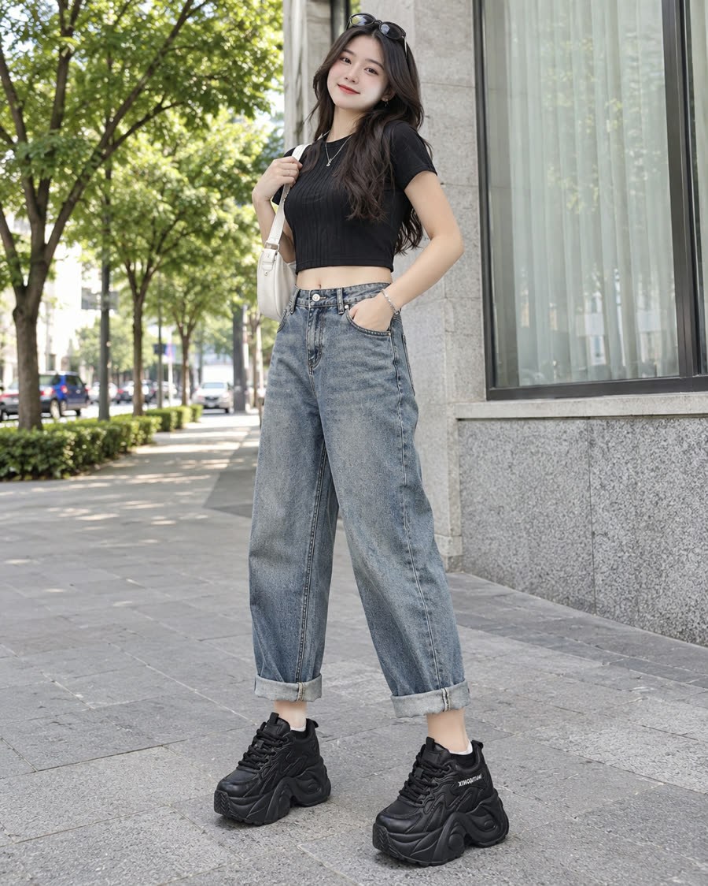

Giày độn đế 10cm đi cả ngày có êm không? Review dad-sneaker JB5502
Dad-sneaker đế to đang hot, nhưng câu hỏi lớn nhất khi đế dày tới mức độn 10cm là: đi cả ngày có êm, có nặng chân không? Mẫu JB5502 trả lời câu đó khá thuyết phục — và bí quyết nằm ở chất đế siêu nhẹ cùng cách chia chiều cao.


10cm của JB5502 được “chia” thế nào?
Dad-sneaker vốn có đế bản to, nên JB5502 gần như không cần độn thêm nhiều bên trong — chiều cao nằm chủ yếu ở phần đế mà kiểu dáng này vốn đã có:
- 8cm đế dad-sneaker — đế chunky bản to đúng mốt, nhìn là form sneaker thể thao bình thường.
- 2cm độn ẩn bên trong — một lớp lót nâng nhẹ, giấu kín trong thân giày.
Vì phần cao nằm ở đế dad-sneaker (ai cũng mặc định “đế dày cho ngầu”), mắt người nhìn vào chỉ thấy một đôi chunky hợp mốt, còn bạn thì “bỏ túi” trọn 10cm.


Ảnh thật JB5502: (trái) cắt lớp 2cm + 8cm = 10cm · (phải) hai màu trắng kem · đen.
Đi dad-sneaker 10cm cả ngày có êm không?
Đây là điều người mua quan tâm nhất. Đế JB5502 làm bằng Polyurethane siêu nhẹ — cầm lên nhẹ bẫng dù bản đế to. Vì là giày độn, đế nâng đều cả bàn chân (không kiễng như cao gót), cộng lớp lót êm đỡ gót và đế có vân chống trượt bám đường, nên đi dạo phố, đứng lâu cả ngày vẫn thoải mái.

JB5502 hợp với ai?
- Nàng mê dad-sneaker đế to, chuộng phong cách trẻ trung, năng động.
- Người đi lại nhiều, đứng nhiều cần một đôi nhẹ, êm, bám đường để diện cả ngày.
- Bạn muốn cao thêm 10cm rõ rệt nhưng ngại kiểu độn lộ liễu hoặc cao gót mỏi chân.
Nếu bạn phân vân giữa các mức cao, xem thêm: nên chọn giày độn 7cm hay 11–13cm?
Phối đồ sao cho 10cm nhìn tự nhiên?
- Quần ống rộng / jean baggy phủ nhẹ cổ giày — ăn gian chiều cao mà không lộ đế.
- Jogger + áo phông oversize — combo thể thao năng động, hợp cả trắng kem và đen.
- Chân váy ngắn + tất cổ trung — khoe đế dad-sneaker có chủ ý, trẻ trung.
Muốn hiểu kỹ mẹo giấu đế, đọc thêm: cách đi giày độn đế không lộ.
Thông số nhanh mẫu JB5502
| Tiêu chí | JB5502 | Ghi chú |
|---|---|---|
| Tăng chiều cao | 10cm | 8cm đế ngoài + 2cm độn ẩn |
| Màu sắc | Trắng kem / Đen | Dáng dad-sneaker |
| Trọng lượng đế | Siêu nhẹ | Đế PU, chống trượt |
| Form | Dad-sneaker chunky | Êm chân, đi cả ngày |
Câu hỏi thường gặp
Giày độn 10cm JB5502 đi cả ngày có êm không?
Có. Đế PU siêu nhẹ dàn lực đều cả bàn chân nên đi cả ngày vẫn êm, ít mỏi hơn cao gót cùng độ cao. Xem thêm: giày độn đế có đau chân không?
Dad-sneaker độn 10cm có bị lộ không?
Chỉ 2cm là độn ẩn, 8cm còn lại là đế dad-sneaker ai cũng nghĩ là “đế dày cho ngầu”, nên khó nhận ra là giày độn.
JB5502 có màu nào, giá bao nhiêu?
JB5502 có màu trắng kem và đen. Giá và size còn hàng xem trực tiếp tại trang mẫu JB5502 hoặc nhắn Zalo để được tư vấn nhanh.
Muốn cao thêm 10cm mà đi cả ngày vẫn êm?
Nhắn Jebee size chân & chiều cao mong muốn — tụi mình tư vấn mẫu JB5502 (hoặc mẫu hợp hơn) trong 1 phút, freeship toàn quốc, đổi size miễn phí 15 ngày.
Nhắn Zalo tư vấn Xem mẫu JB5502